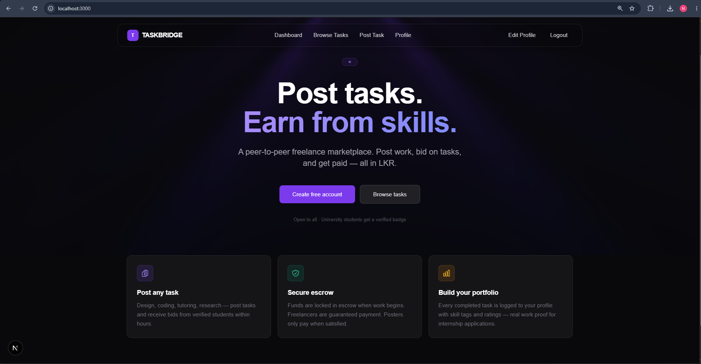

A service-oriented freelance task marketplace built with Spring Boot microservices, Next.js, PostgreSQL, Redis, Kong, Docker, Kubernetes, and Jenkins.
TaskBridge is a team-built freelance task marketplace designed around service-oriented and microservices principles. Clients can create tasks, freelancers can browse tasks and submit bids, and clients can accept a bid to assign work. The backend separates user management, task and bidding logic, payments, and notifications into independently responsible services. Kong provides a single API entry point, Redis supports asynchronous event communication, PostgreSQL provides persistent relational storage, Docker containerizes the backend, Kubernetes orchestrates the local deployment, and Jenkins automates the Continuous Integration build process.

Clients can create freelance tasks while freelancers browse available work and submit bids. Bid acceptance assigns the selected freelancer and moves the task into its in-progress lifecycle.
User registration and login are handled by the User Service. Signed JWTs are used for stateless authentication and authenticated backend requests across protected service endpoints.
Accepting a bid triggers creation of a pending escrow transaction. The payment lifecycle supports PENDING → HELD → RELEASED states, with PayHere Sandbox integration used for payment initiation and callback handling.
Task Service publishes a BID_ACCEPTED event through Redis. Payment Service consumes the event and creates the related escrow transaction without requiring a direct synchronous payment-service call.
Kong acts as the single backend entry point and routes requests to User, Task, Payment, and Notification services. Gateway-level rate limiting provides a centralized traffic-control mechanism.
Backend services and infrastructure are containerized with Docker and orchestrated on a local Docker Desktop Kubernetes cluster using Deployments, Services, a dedicated namespace, and persistent storage.
Frontend application built with the Next.js App Router, TypeScript, and Tailwind CSS. It provides registration, login, task creation, task browsing, bidding, bid acceptance, and payment-related user flows.
Primary backend framework for the User, Task, and Payment microservices. Services follow controller-service-repository layering and expose REST APIs for their individual business responsibilities.
Main relational persistence layer. User and Task data use separate logical databases on the main PostgreSQL instance, while Payment Service uses a separate PostgreSQL instance for escrow and payment data.
Used for asynchronous event-driven communication between services. The main implemented flow publishes BID_ACCEPTED from Task Service and consumes it in Payment Service.
Provides a single backend entry point and route forwarding to individual microservices, reducing the need for the frontend to know every service address. Rate limiting is configured at gateway level.
Dockerfiles package backend applications into container images, while Docker Compose runs the microservices together with Kong, Redis, and PostgreSQL. Named volumes persist database data independently of container lifecycles.
Local orchestration using Docker Desktop Kubernetes. Deployments manage application pods, Services provide internal discovery, and PersistentVolumeClaims provide persistent database storage.
Jenkins implements Continuous Integration by checking out the GitHub repository, building Spring Boot services with Maven, producing JAR artifacts, and building Docker images. Kubernetes deployment remains manual.
Responsible for registration, login, JWT generation, authentication, and user/profile operations. Other protected backend operations rely on authenticated identity rather than trusting arbitrary client-supplied user IDs.
Owns tasks, bids, task lifecycle rules, and freelancer assignment. When a client accepts a bid, the task is assigned to the selected freelancer, changes to IN_PROGRESS, and a BID_ACCEPTED event is published.
Consumes accepted-bid events, creates escrow transactions, generates PayHere payment initiation parameters, validates payment callbacks, moves successful payments to HELD, and supports authorized release to RELEASED.
A separate Node.js service was integrated for event-based notification persistence. It forms part of the broader service architecture, although the core demonstrated workflow focuses on User, Task, and Payment services.
Challenge: Direct REST communication would make bid acceptance more dependent on immediate Payment Service availability.
Solution: Implemented asynchronous Redis event communication. Task Service publishes BID_ACCEPTED and Payment Service independently consumes the event to create the pending escrow transaction.
Challenge: Multiple services needed to validate the same application JWTs consistently.
Solution: Configured a shared sufficiently strong JWT signing secret for the relevant backend services and kept application JWT validation within the services rather than relying on Kong to issue the application's authentication tokens.
Challenge: Microservices cannot use localhost to reach databases or other containers because localhost refers to the current container.
Solution: Used Docker Compose/Kubernetes service names such as postgres, redis, user-service, and payment-postgres as network hostnames and configured service-specific environment variables.
Challenge: Database information must survive container or pod recreation.
Solution: Docker Compose uses named volumes such as postgres_data and payment-pgdata, while Kubernetes uses PersistentVolumeClaims to decouple persistent data from the lifecycle of database containers/pods.
Challenge: Building several microservices and their Docker images manually is repetitive and error-prone.
Solution: Added a Jenkins pipeline that checks out source code, runs Maven builds for the Spring Boot services, generates JAR artifacts, and builds the Docker images. Deployment is intentionally kept separate/manual in the current implementation.